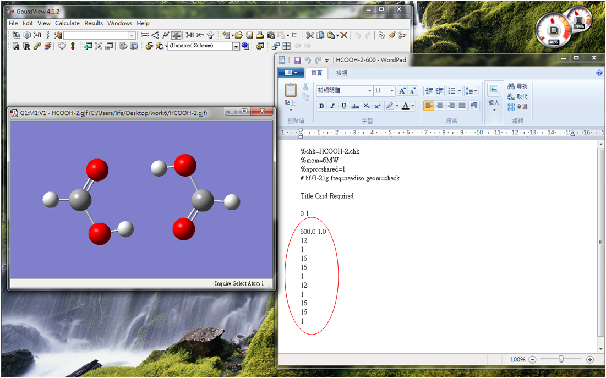

(4) 另外，在工具列 Results 選項中選擇 View File，搜尋(ctrl+F) BSSE，就可發現 Counterpoise: corrected energy = -151.182 hartree 和 Counterpoise: BSSE energy = 0.00637 hartree，其中，interaction energy 即為 Counterpoise corrected energy = -151.182 hartree。
Prediction the energy difference between the HOMO and LUMO of ethylene and formaldehyde.
(1) 進入 Gaussview，分別將 ethylene 和 formaldehyde 建構出來，建成 ethylene.gjf 與 formaldehyde.gjf 檔。
(2) 兩者的完整 gjf 檔分別如下，可對照下方圖示：
(3) 然後啟動 gaussian09，分別開啟檔案 ethylene.gjf 與 formaldehyde.gjf 檔，對其進行 opt 和 freq 計算。
(4) 計算完成後，此時有兩種 read output 的方法可以取得 HOMO 及 LUMO 的能階資訊。
啟動 Gaussview，分別打開 ethylene.log 和 formaldehyde.log 檔，在工具列 Results 選項中選擇 View File ，其中 Occupied 的最後一個軌域即為 HOMO，Virtual 的第一個軌域即為 LUMO，兩數值相減即為 Band Gap，單位為 hartree。
ethylene：
formaldehyde：
啟動 Gaussview，分別打開 ethylene.log 和 formaldehyde.log 檔，在工具列 Edit 選項中選擇 MOs，即可從圖中得知，最低未填電子軌域即為 LUMO，最高佔據電子軌域即為 HUMO，相減即 Band Gap。
註：圖中淺綠色線為能階正負號的交界。
(5) 由以上計算可以得知：
Ethylene 之 Band Gap = 0.18661 – ( -0.37969 ) = 0.56630 hartree
Formaldehyde 之 Band Gap= 0.14744 – ( -0.43294 )= 0.58038 hartree
Run a geometry optimization for NH3 with C3v symmetry.
(1) 啟動 Gaussview，建立一個 NH3 的分子，存為 nh3.gjf。
(2) 打開 Results 中的 View File，輸入以下指令：
(3) 輸入完指令後，儲存再重新開啟 nh3.gjf 檔，即可看到以 dummy atom X 為基準點所建立出來的 z-matrix 座標。
(4) 利用 gaussian09 跑完 nh3.gjf 檔後，再利用 gaussview 打開 nh3.log 檔，在工具列 Results 選項中選擇 Summry，就可以得到 opt 後 C3V 對稱的 NH3 分子。
(1) H 指向中心
(2) H 指向鍵中心
(3) H 指向 C 原子
Estimate the interaction energies of (H2O)2 and (NH4 - NH3)+.
(1) 以 (H2O)2 為例，啟動 Gaussview，在 file 開啟 new 的檔案，在上面建立兩個水分子，存為 h2o-h2o.gjf 檔。
(2) 打開 Results 中的 View File，輸入以下指令。並在座標圖後面標示 1 與 2， counterpoise= 2 是讓其產生 ghost 原子，從而在同一 Basis Set 進行計算；後面標示 1 與 2 則是區別兩個水分子為不同的 monomer，注意的是，charge 和 multiplicity 要記得區分，第一組 0 1 為 ( H2O - H2O ) 的部分，第二組 0 1為 1 號 H2O 的部分，第三組 0 1 則為 2 號 H2O 的部分。
(3) 丟到 gaussian09 去跑檔案，跑完後再用 Gaussview 開啟 h2o-h2o.log 檔，即得到 opt 後的結構，如下圖所示：
(4) 另外，在工具列 Results 選項中選擇 View File，搜尋(ctrl+F) BSSE，就可發現 Counterpoise: corrected energy = -151.182 hartree 和 Counterpoise: BSSE energy = 0.00637 hartree，其中，interaction energy 即為 Counterpoise corrected energy = -151.182 hartree。
(5) 同理，(NH4 – NH3)+ 的 interaction energy 做法如下圖，在 View File 地方輸入指令與其兩個 monomer的標示位置，注意的是，charge 和 multiplicity 要記得區分，第一組 1 1 為 (NH4 – NH3)+ 的部分，第二組 1 1 為 NH4+ 的部分，第三組 0 1 則為 NH3 的部分，最後進行存檔。
(6) 丟到 gaussian09 跑完檔案後，打開 output 檔，在工具列 Results 選項中選擇 View File，就可以找到對於 (NH4 – NH3)+系統於的 Counterpoise: corrected energy = -112.159hartree 和 Counterpoise: BSSE energy = 0.00561 hartree。其中，(NH4 – NH3)+ 的 interaction energy 即為 Counterpoise: corrected energy = -112.159 hartree。
Find the rotational barrier of OH torsion of vinyl alcohol and ethanol.
(1) 先對 vinyl alcohol (乙烯醇) 和 ethanol (乙醇) 進行optimize，左圖為 vinyl alcohol 的 opt 結構，右圖則為 ethanol 的 opt 結構。
(2) 在 Gaussview 裡面的工具列中，選擇 save，另存一個新的檔案，以 vinyl alcohol 為例，存為 vinyl alcohol-s.gjf 檔，然後選擇 Results 中的 View File。
(3) 指令欄輸入 scan 參數，如下所示：
(4) 同理，ethanol 如下所示：
(5) 開啟 gaussian09，去跑 vinyl alcohol-s.gjf 和 ethanol-s.gjf 兩個scan 檔，跑完後再打開 Gaussview，選擇 Results 中的 Scan，即可看到 scan 後的 POTENTIAL BARRIERS 圖。
(6) 建立過渡態的input file: 選擇 POTENTIAL CURVE 的最高點(極可能為過渡態存在的地方)，然候同樣 save，存成另一個名為 vinyl alcohol-ts.gjf 檔，再打開 Results 中的 view file，在 Route Section 的地方輸入以下指令，再按下 save，即完成建 TS 檔的動作。
(6) 最後開啟 gaussian09，分別去跑 vinyl alcohol-ts.gjf 和ethanol-ts.gjf 檔，即可跑出 TS 的結構圖。按 results 裡面的 vibrations，就可顯示出負頻大小，並可看出它的振動方向。
Calculate and assign the IR, Raman and NMR spectra of formic acid.
(1) 利用 Gaussview 建立一個 formic acid (HCOOH) 的 model，再輸入 opt 和 freq 的指令，存成 formic acid.gjf 檔。
(2) 跑完檔案後，開啟 log 檔，選擇 results / vibration / spectrum，就可以得到 IR 和 Raman 的光譜。
(3) 將 opt 後的檔案存成 formic acid-nmr.gjf 檔，在 Route Section 輸入 nmr = giao，然後再進行存檔動作。跑完 formic acid-nmr.gjf 檔後，打開 output 檔，再選擇 Results / NMR，就可以得到 NMR 的光譜圖。
Predict the equilibrium constant of 2HCOOH → (HCOOH)2
Bonus: Predict equilibrium constant K(298.15K)=?, K(600.0K)=?
(1) 首先，建立甲酸 (HCOOH) 的 model，然後對其進行 optimize、freq。
(2) 打開 output 檔，選擇 Result / View File，對 zero-point 進行搜尋 (CTRL+F)，往下找幾行有熱力學參數，HCOOH 的 Sum of electronic and thermal Free Energies = -187.688228 hartree。
(3) 再建立一個 (HCOOH)2 的系統，運用第三題 CP 的概念去進行計算，校正 BSSE。
(4) 跑完檔案後，打開 output 檔，選擇 Result / View File，找到 (HCOOH)2 的 Sum of electronic and thermal Free Energies = -375.383455 hartree。
(5) 計算 delta G = -RTlnK → K = e-delta G/kbT
delta G = -375.383455 - (-187.688228*2) = -6.999 x 10-3 hartree
K(298.15K) = 1646.8
(1) 同樣，將 HCOOH 的 output 檔存成 HCOOH-600.gjf 檔，選擇 Results / View File，然後輸入以下指令，注意格式需空行處。
(2) 同樣地，對 (HCOOH)2 這個系統進行相同的動作。

(3) 打開 output 檔，選擇 Result / View File，搜尋 zero-point，發現溫度為 600 K 和壓力為 1atm。
(4) 同時，我們可以發現 HCOOH 和 (HCOOH)2 的 Sum of electronic and thermal Free Energies 分別為 -187.718947 與 -375.440797 hartree。
(5) 計算 delta G = -RTlnK → K = e-delta G/kbT
delta G = -375.440797 - (-187.718947*2) = -2.903 x 10-3 hartree
K(600.0K) = 4.60
討論：
K(298.15K) = 1646.8
K(600.0K) = 4.60
因此，我們可以發現 HCOOH 分子高溫時易形成氣體分子，且高溫反應為吸熱，故其不易偶合化；反之，在低溫的時候，較易形成 dimer。
Predict the proton affinity of NH3 and H2O using G2MP2 method.
(1) 開啟 gaussianview，分別建立 NH3 和 NH4+ 的 model，然後使用 G2MP2 方法去進行 optimize 與 freq 的計算。
(2) 另外，建立 H+ 的 model，但是其計算方法改用 hf，且只輸出入 freq 的計算即可 (單原子不需要 opt 的計算)。因為 H+ 沒有電子，所以當使用 G2MP2 方法去計算的時候，會出現錯誤。
(3) 跑完檔案後，同時開啟這三個的 output 檔， 選擇 Result / View File，搜尋 zero-point，找到個別的熱力學參數。
理論上，proton affinity = ENH3 + EH+ - ENH4+，但因為實驗部分多採用 H (enthalpy)，故 NH3 的 proton affinity = HNH3 + HH+ - HNH4+ = 0.332501 hartree。
(4) 同理，H2O 的做法也相同：開啟 gaussianview，分別建立 H2O 和 H3O+ 的 model，然後使用 G2MP2 方法去進行 optimize 與 freq 的計算。
(5) 跑完檔案後，同時開啟這三個的 output 檔，選擇 Result / View File 搜尋 zero-point，找到個別的熱力學參數；故 H2O 的 proton affinity= HH2O + HH+ - HH3O+ = 0.266533 hartree。
Predict the structure of the transition state for the following reaction:
SiH4 → SiH2 + H2
(1) 先計算 opt 及 freq 之 SiH4結構，作為 scan 的初始結構。
(2) 因為要進行脫附反應，所以將兩個 H 原子 scan 至 H2 鍵結的距離，使之自動脫附，需在 input 檔 (.gjf) 中輸入 scan 的指令及參數，完整 gjf 檔如下所示：

(3) 打開 output 檔，選擇 Results 中的 Scan，下圖為 SiH4 → SiH2 + H2 脫附反應的 potential surface。

(4) 由上圖中的 Scan of Total Energy，取最末點 (最右邊) 進行結構最佳化計算，就可得到產物的結構。

(5) 取其能量最高點進行 TS 的計算，可得到過渡態的結構；然後選擇 Result / Vibration，觀察其負頻的振動方向，來判斷此負頻為正確的過渡態結構。

另外，也可利用 qst2 與 qst3 的方法求得過渡態結構，其做法先要有反應物、產物和過渡態之最佳化結構。
先介紹 qst2 方法，輸入 opt = qst2 的指令，並依序置入反應物及產物之最佳化結構，gjf檔如下，進行計算後即可得到下圖的結果。
註：方法 qst2 中 2 意旨反應物及產物的兩個結構。

而 qst3 則輸入 opt=qst3 的指令，並依序置入反應物、產物和過渡態之最佳化結構，計算結果如下圖； qst3 方法為當前兩個方法無法實行，或是想要更精準的過渡態結構時，可使用之。
註：方法 qst3 中 3 意旨反應物、產物及過渡態三個結構。